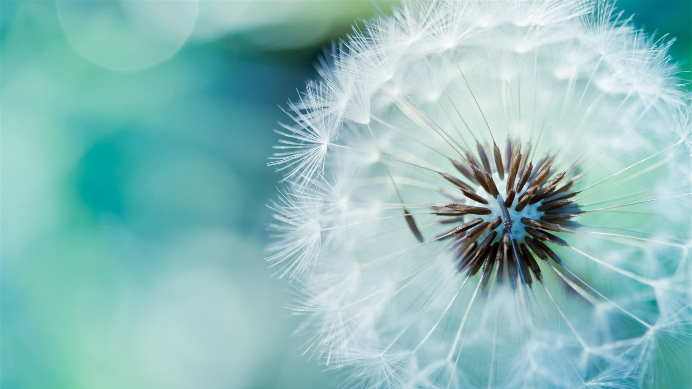

<!--15.10.2016: Bassagap adding tabs to the template-->
<ion-view view-title="Home" >
    
    <ion-content class="padding">
        <ion-refresher on-refresh="refresh(true)" spinner="android"></ion-refresher>
        <ion-list>
            <ion-item item="item">
                Data goes here
            </ion-item>
        </ion-list>
    </ion-content>
    <ion-tabs class="tabs-light tabs-icon-bottom">

        <ion-tab title="Notifications" icon-on="ion-alert-circled" icon-off="ion-alert-circled" href ="#/notifications">
            <!-- Tab 1 content -->
        </ion-tab>

        <ion-tab title="Calendar" icon-on="ion-android-calendar" icon-off="ion-android-calendar"href ="#/calendar">
            <!-- Tab 2 content -->
        </ion-tab>

        <ion-tab title="Progress" icon-on="ion-ios-body" icon-off="ion-ios-body">
            <!-- Tab 3 content -->
        </ion-tab>

    </ion-tabs>  
</ion-view>